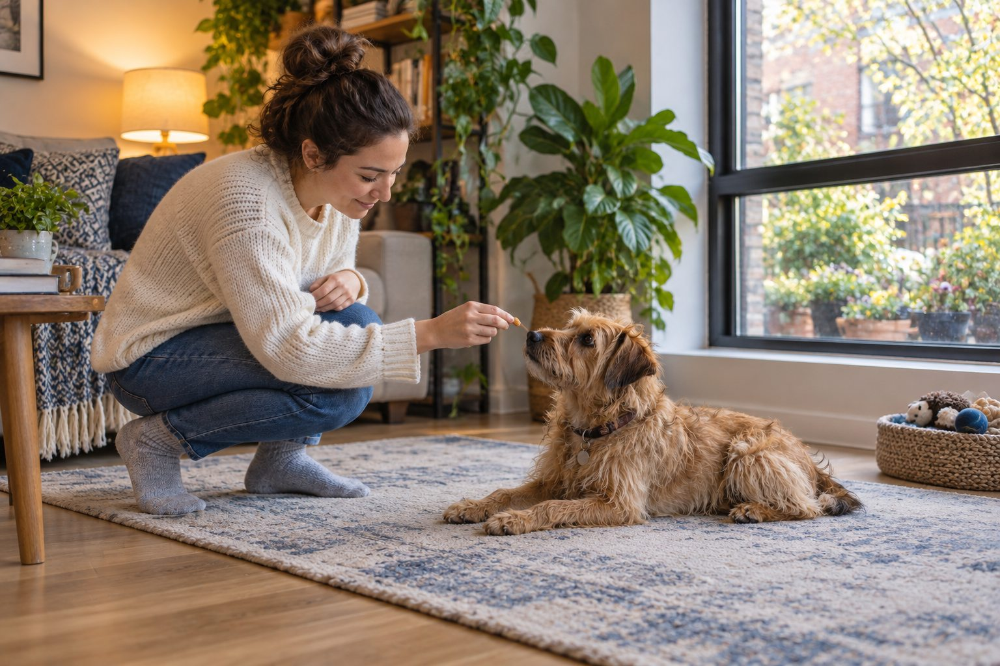

Identify triggers, create distance from them, reward calm behavior, and seek professional help for fear or escalating reactivity.
Barking is communication. A dog may alert you to a visitor, seek attention, react to movement, or express fear. The most useful training plan changes the situation around the bark and teaches a behavior the dog can do instead.
Map the triggers
Write down when barking starts, what your dog sees or hears, and what happens afterward. A dog who barks at the window needs a different plan from one who barks when left alone. Covering a street-facing window or changing the walking route can reduce rehearsals while you train.
If barking is sudden or paired with pain, restlessness, or confusion, ask your veterinarian to check for health changes.
Barking is communication, so first identify what the dog is reacting to. A person at the window, a doorbell, a passing dog, boredom, fear, and discomfort can all produce noise for different reasons. Keep a log for several days: trigger, distance, time, body posture, how long the barking lasted, and what happened afterward. A dog that barks only when left alone needs a different plan from one that barks at bicycles during walks. The goal is to understand the pattern before choosing an intervention.
Notice thresholds. If the dog can see a distant trigger and still eat a reward, you may have room to teach a calmer response. If the dog is lunging, panicking, or cannot respond, increase distance or block the view. Training is most effective when the dog can still think. A brief video can help a qualified professional, but do not provoke barking just to film it.
Reward the behavior you want
At a distance where your dog can still notice the trigger without exploding, reward a glance back at you, a quiet pause, or a simple cue they already know. Keep sessions short. Gradually reduce distance only when the dog remains comfortable.
For doorbell barking, practice with a low-volume recording and reward going to a mat. Build toward the real sound in small steps. Everyone in the household should respond consistently.
Management can reduce daily practice of the unwanted behavior while you train. Move the resting spot away from a busy window, use a curtain or visual barrier, or choose a quieter walking route for a while. These changes do not teach the whole skill, but they create calmer conditions for learning. Reward the moment the dog notices a mild trigger and remains quiet or turns back toward you. Use a cue such as coming to a mat only after the dog has practiced it in easy settings.
Start at a distance where success is likely. Reduce that distance slowly over multiple sessions instead of moving straight to the busiest place. The American Veterinary Society of Animal Behavior supports reward-based training and advises against aversive methods. Yelling, startling, or painful devices can increase stress and make fear-related barking worse.

Avoid common setbacks
Shouting adds noise and can increase arousal. Punishment may suppress a warning without addressing fear. Do not expect a dog to be silent at all times; aim for a manageable response and a way to settle.
Give daily opportunities for sniffing, play, and rest. Boredom and stress can make bark triggers harder to handle, though enrichment alone may not solve a strong fear response.
Teach an alternative behavior that fits the situation. At home, the dog might go to a mat when the doorbell rings; on a walk, it might look at you and move away from a trigger. Practice the skill without the trigger first, rewarding small steps. Then introduce the trigger at low intensity. If the dog barks, calmly increase distance or lower the intensity and try again later. The mistake is often asking for a finished behavior in the hardest environment before the dog has learned the easy version.
Keep sessions short enough that the dog can recover and rest. Repeated exposure to a trigger without relief may not build confidence. Mark progress by fewer intense episodes, a faster return to calm, or success at a slightly closer distance. Total silence is neither realistic nor necessary for a healthy dog.
Get the right support
A qualified reward-based trainer can help with a tailored plan. If your dog lunges, seems terrified, or cannot recover after a trigger, consult your veterinarian and a behavior professional. Keep people and pets at a safe distance while working on the issue.
Some setbacks call for a medical check. Barking that begins suddenly, is paired with pain or confusion, or sounds very different from normal may reflect a health issue. A dog that vocalizes when alone could have separation-related distress rather than a simple need for more exercise. If the dog is frightened or unable to settle, seek a veterinarian and a qualified behavior professional. Share the trigger log and any safe video. Do not use a device that suppresses sound while leaving distress untouched.
Household consistency matters. If one person rewards calm behavior and another shouts from across the room, the dog receives mixed signals. Agree on one calm response, where rewards are kept, and which situations are managed for now. A plan is easier to follow when every caregiver understands the trigger and the replacement behavior.
Practical details
A barking log reveals the real job
Write down the trigger, distance, body language, and what happened next. A dog who barks once at a knock and settles is different from a dog who lunges at every passerby. A third dog may bark only after being left alone. One generic quiet command will not solve all three situations because the motivation and emotional state differ.
If barking changes suddenly, especially with restlessness, pain, or confusion, ask your veterinarian to look for a health issue. For long-standing behavior, the log helps a qualified trainer design a plan around the actual trigger rather than a label like 'barks at everything.'
Match the plan to the barking pattern
Limit the view during busy times and reward quiet observation at a greater distance.
Practice a low-volume recording and a go-to-mat cue before trying the real bell.
Create enough distance for the dog to notice the trigger and still respond to you.
Seek guidance for separation-related distress rather than treating it as ordinary alert barking.
Management prevents repeated rehearsal
Closing a curtain during the busiest street hour, using a baby gate to keep a dog farther from the front door, or taking a quieter walking route can reduce the number of difficult moments. These changes are not failures; they create room for learning. If the dog is already barking intensely, it may be too close to the trigger to practice a new cue.
Work at a distance where the dog can notice something and still eat a treat or turn toward you. Reward that calmer response, then leave or increase distance before the dog becomes overwhelmed. Gradually make the situation harder only after several successful sessions.
Imagine a terrier that barks when pedestrians pass a front window. Closing the lower blind during the busiest hour prevents many rehearsals. At quieter times, the owner rewards the dog for noticing a distant person and turning away from the window. Over time, the dog may recover more quickly even before barking stops altogether. A different dog barks at every noise after moving house; it may need a quieter resting area and a slower adjustment plan rather than the same window exercise.
Track what happens after you intervene. Does the dog return to a chew or rest, or remain tense and scanning? Recovery helps reveal whether the underlying emotion is improving. If progress stalls, change the setup or seek help. Repeating the same difficult exposure more often is not a strategy by itself.
Teach a useful alternative
For a doorbell, a mat cue can give the dog a clear action: move to a safe place and wait for a reward. For outdoor triggers, a practiced 'look at me' or turn-around cue can help you change direction. Teach those behaviors first in quiet settings, then introduce low-intensity versions of the trigger. Keep practice short and end before frustration rises.
Avoid yelling, shock devices, or punishment that may increase fear or suppress warnings without resolving the cause. The American Veterinary Society of Animal Behavior recommends reward-based methods. If the dog is frightened, lunges, or cannot recover after a trigger, work with your veterinarian and a qualified behavior professional. Safety and welfare come before a silent house.
Make room for normal needs: sleep, physical activity appropriate to the dog, sniffing, social contact, and quiet time. Understimulation can contribute to some barking, but extra exercise is not a cure for fear, pain, or separation distress. Choose enrichment that does not leave the dog more aroused. A simple food puzzle in a quiet room may be useful for one dog; another may need reduced exposure and professional treatment first.
Reassess as circumstances change. A new baby, move, illness, or noisy construction can alter the dog's threshold. Return to easier training steps when needed. The most useful question is not how to force the dog to stop making sound; it is what starts the response and what the dog can learn to do instead while feeling safe.
Before each training session, choose one manageable trigger and one clear reward point. If the dog notices a person at a distance and remains able to turn toward you, reward that moment. If the dog barks intensely, increase distance or reduce the view; do not continue at the same difficulty while shouting commands. Practice an easy alternative such as moving to a mat or walking away when no trigger is present, then add the trigger gradually. Several brief successes are better than one long struggle.
Review the dog's welfare as you track barking. Is it sleeping well, settling between events, and willing to engage with normal activities? A dog that remains tense after every noise may need more than a training cue. Seek veterinary and qualified behavior help for severe fear, sudden changes, or distress when alone. A plan should reduce the dog's need to bark as well as the volume heard by people.
Identify what starts the barking
For several days, write down the trigger, distance, time, and your dog's body language. Barking at a person passing the window is different from barking because the dog is alone, startled, or seeking play. Management can help immediately: block a busy window view, move farther from a trigger on walks, or offer a quiet resting space. The goal is to prevent repeated rehearsals while you teach a calmer response.
When the dog notices a trigger but is still able to eat and respond, reward the calm moment before barking escalates. Work at a distance where the dog can succeed, then change one part of the situation at a time. Shouting may add excitement and does not teach what to do instead. Avoid harsh devices or punishment, especially if fear is involved; they can make the underlying problem worse.
If barking appears suddenly, sounds different, or accompanies pain or confusion, ask a veterinarian about health causes. For persistent fear or separation-related distress, seek a qualified behavior professional. Give that person your trigger notes and a short video taken without provoking the dog. Progress is usually measured in calmer recoveries and fewer intense episodes, not complete silence.
Practice in brief sessions rather than waiting for a full barking episode. End after a successful calm response and let the dog rest. If the trigger is unavoidable, increase distance first; learning is difficult when the dog is already overwhelmed. Record small improvements over several weeks.
Continue exploring
For a broader routine, read How to Help Your Dog Stay Calm During Car Rides, How to Help a Cat Adjust to a New Home, and A Daily Routine That Enriches an Indoor Cat.
Frequently Asked Questions
Will ignoring barking make it stop?
Sometimes attention-related barking changes with consistency, but barking driven by fear or an unmet need needs a different response.
Should I use a bark collar?
Discuss humane alternatives with a qualified professional; punishment devices can worsen distress.
Can I teach a quiet cue?
Yes, but teach it alongside identifying triggers and rewarding calm behavior.
Editorial references
These resources informed the general guidance in this article. They do not replace advice tailored to your pet.
This guide offers general information. Your pet’s age, health, and history may call for a different plan. For medical concerns, ask your veterinarian.